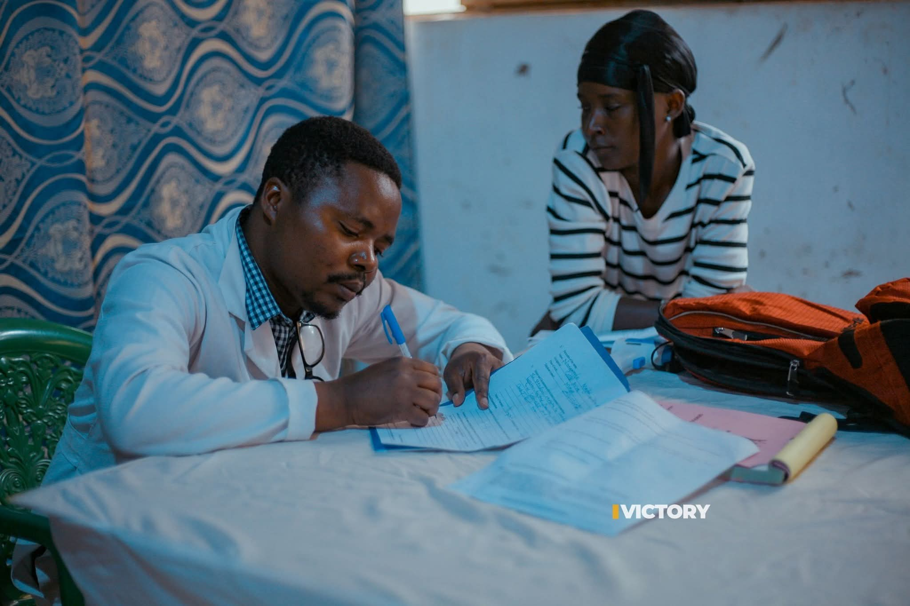
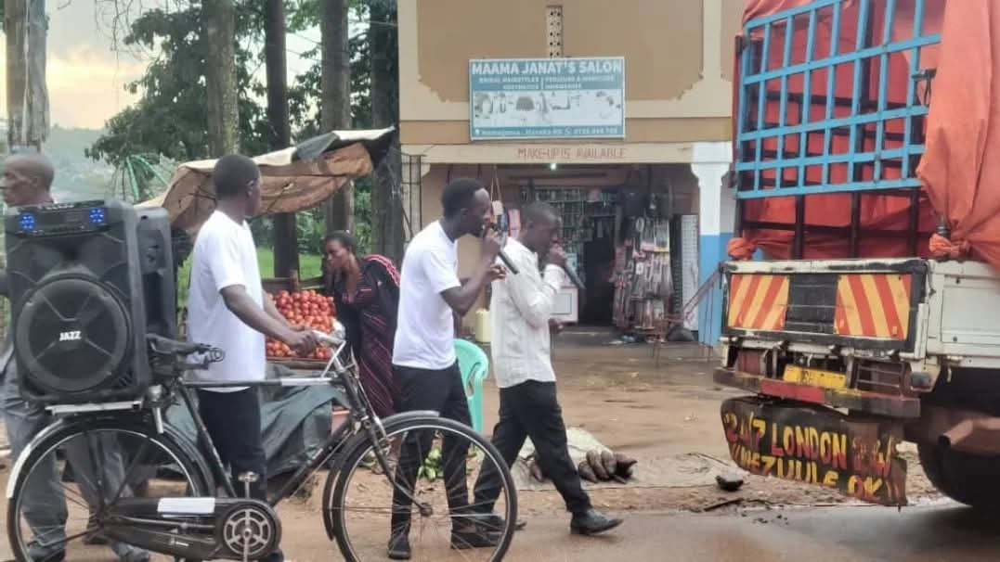
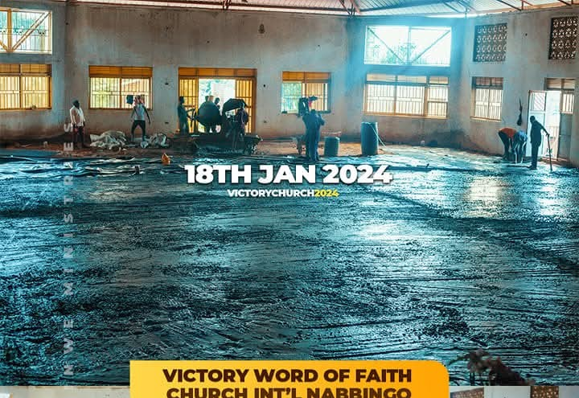
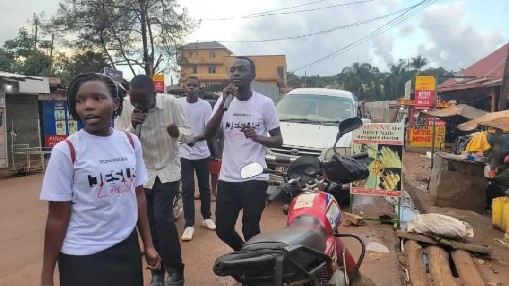
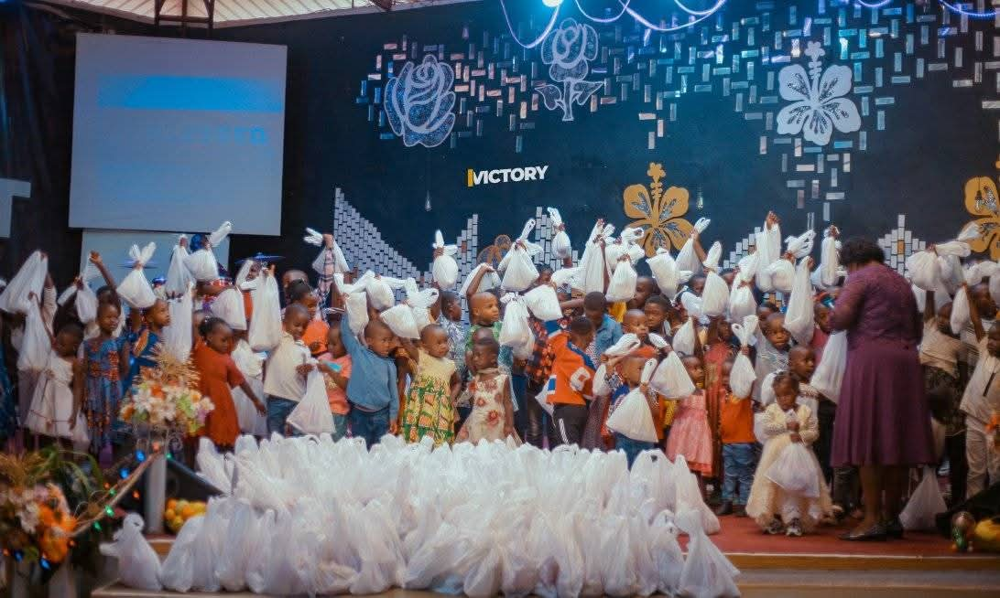
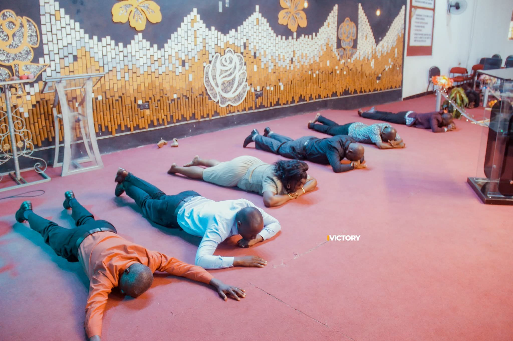
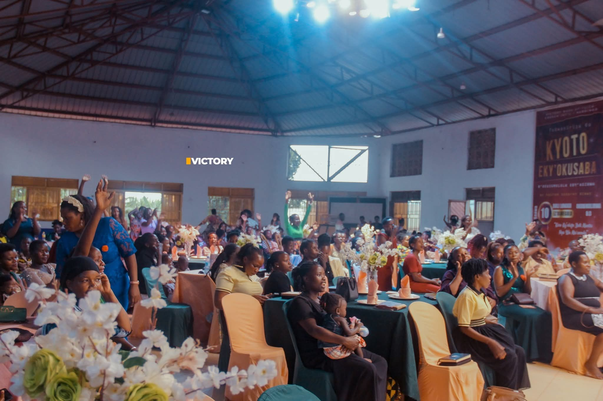
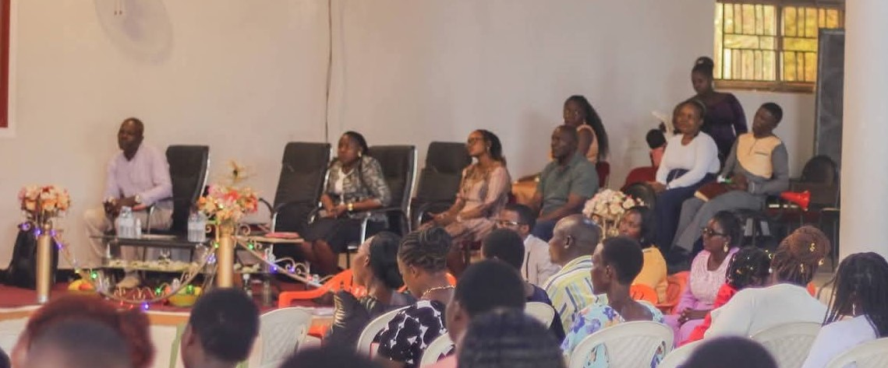

Find your ministry and join a community where you can grow, serve, and make a difference.
Explore ministries designed for every age group and interest. Click on any ministry to learn more details.

Creating a welcoming environment by greeting attendees, assisting with seating, and ensuring smooth service flow.
Learn More
Maintaining and operating church equipment and machinery to support all ministry activities and events.
Learn More
Maintaining church facilities and undertaking construction projects to support church growth and community needs.
Learn More
Sharing the Gospel through outreach programs, street evangelism, and community engagement activities.
Learn MoreEnsuring the safety and security of all church members, visitors, and property during services and events.
Learn More
Promoting excellence in all church activities through quality assurance, training, and continuous improvement.
Learn More
Dedicated prayer warriors covering the church, leadership, members, and community in focused prayer.
Learn MoreLarge choir ministry leading congregational worship with powerful vocals and harmonious praise.
Learn MoreEngaging young people through relevant teaching, fellowship, and activities designed for spiritual growth.
Learn MoreStrengthening marriages through biblical teaching, couple's fellowship, and marriage enrichment programs.
Learn More
Empowering women through Bible studies, fellowship, and activities that address women's unique needs.
Learn MoreBuilding godly men through fellowship, accountability, and teaching on biblical manhood and leadership.
Learn MoreManaging sound, lighting, video recording, live streaming, and all church media communications.
Learn MoreTeaching children and adults Biblical principles through structured classes and age-appropriate curriculum.
Learn More
Supporting church operations through administrative tasks, record keeping, and office management.
Learn MoreThe backbone of our church, the Intercession Ministry is dedicated to covering our church, community, and nation in prayer. We believe prayer changes everything.
Meeting Times: Tuesday 6AM, Friday 7:30PM, and continuous prayer chain
Activities: Intercessory prayer, prayer walks, prayer retreats, and 24/7 prayer covering
God has given you unique gifts and talents to serve His kingdom. Don't let them go unused. Join a ministry today and experience the joy of serving others.
1 Peter 4:10: "Each of you should use whatever gift you have received to serve others, as faithful stewards of God's grace in its various forms."